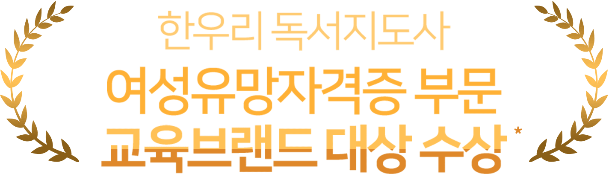

경단녀 끊고 3년 동안 일어난 긍정적인 변화 3가지
서초남지부 유은혜 독서지도사
아이 둘을 키우며 자의 반 타의반으로 경력이 끊겼지만 이대로 세상과 단절된 채 살고 싶지는 않았어요. 답답한 상황에 한우리독서지도라를 알게 되고 온라인 수강을 했어요. 초보 시절을 버티고 한우리독서지도사 7년차인 지금, 많은 것이 변화되었어요. 엄마도 자신의 일과 시간이 절대적으로 필요해요. 좋아하는 일을 하면서 경제적인 여유와 자녀교육에도 도움이 되는 독서지도사라는 직업에 자부심을 느낍니다.
좋아하는 일을 하면서도 경제적인 여유와 자녀 교육에도 도움이 되는 독서지도사라는 직업에 자부심을 느낍니다.



고객센터
공지사항